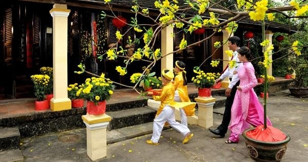
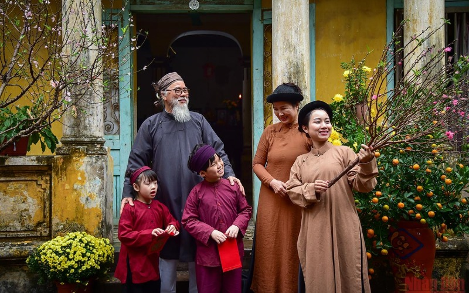

🚪 Xông Đất Đầu Năm
Xông Đất Là Gì?
Xông đất (hay còn gọi là đạp đất, mở hàng) là phong tục quan trọng trong ngày Tết của người Việt Nam.
Đây là việc người đầu tiên bước vào nhà trong năm mới (sau thời khắc Giao thừa) sẽ ảnh hưởng đến vận may
của cả gia đình trong suốt năm đó.
Theo quan niệm dân gian, người xông đất sẽ "mở cửa" cho một năm mới, mang theo may mắn hoặc xui xẻo
tùy thuộc vào tuổi tác, tính cách và hoàn cảnh của người đó.
Ý Nghĩa Của Xông Đất
- Khởi đầu may mắn: Người xông đất tốt sẽ mang lại may mắn, tài lộc cho cả năm
- Tránh xui xẻo: Chọn người xông đất hợp tuổi để tránh những điều không may
- Tâm linh: Tin rằng người đầu tiên vào nhà sẽ ảnh hưởng đến vận khí của gia đình
- Văn hóa: Thể hiện sự cẩn trọng và mong muốn một năm mới tốt đẹp
Tuổi Hợp Xông Đất
Việc chọn người xông đất thường dựa trên tuổi tác, được tính theo can chi (12 con giáp) và ngũ hành.
Người xông đất nên có tuổi hợp với chủ nhà.
Cách Xác Định Tuổi Hợp
- Theo Tam hợp: Những con giáp hợp nhau theo nhóm 3
- Thân - Tý - Thìn
- Tỵ - Dậu - Sửu
- Dần - Ngọ - Tuất
- Hợi - Mão - Mùi
- Theo Lục hợp: Những cặp con giáp hợp nhau
- Tý - Sửu, Dần - Hợi, Mão - Tuất
- Thìn - Dậu, Tỵ - Thân, Ngọ - Mùi
- Tránh Tứ hành xung: Những con giáp xung khắc
- Tý - Ngọ - Mão - Dậu
- Dần - Thân - Tỵ - Hợi
- Thìn - Tuất - Sửu - Mùi
📅 Lưu ý: Ngoài tuổi tác, còn cần xem xét:
- Người xông đất nên có tính cách vui vẻ, lạc quan
- Không nên chọn người đang có tang, đang ốm đau
- Người có công việc ổn định, gia đình hạnh phúc sẽ tốt hơn
- Nên chọn người thân quen, đáng tin cậy
Điều Kiêng Kỵ Khi Xông Đất
Những Điều Nên Tránh:
- Người xông đất không nên:
- Vào nhà khi đang buồn bã, tức giận
- Nói những điều không may mắn, tiêu cực
- Mặc quần áo màu đen, trắng (màu tang)
- Đến khi đang ốm đau, bệnh tật
- Vào nhà mà không chào hỏi, lễ phép
- Chủ nhà không nên:
- Để người xông đất vào nhà khi họ đang có việc không vui
- Quét nhà, đổ rác ngay sau khi người xông đất đến
- Cãi nhau, tranh luận trong ngày mùng 1
- Cho vay tiền, mượn tiền trong ngày đầu năm
Nghi Lễ Xông Đất
Khi người xông đất đến nhà, thường có những nghi lễ sau:
- Chào hỏi: Người xông đất chào chủ nhà với lời chúc tốt đẹp
- Lì xì: Chủ nhà thường lì xì cho người xông đất (nếu là trẻ em) hoặc ngược lại
- Mừng tuổi: Trao đổi lời chúc Tết, mừng tuổi nhau
- Ăn uống: Mời người xông đất dùng trà, bánh kẹo, mứt
- Trò chuyện: Nói chuyện vui vẻ, tích cực về năm mới
Lời Chúc Khi Xông Đất
💬 Những lời chúc phổ biến:
- "Chúc mừng năm mới! An khang thịnh vượng!"
- "Chúc gia đình năm mới vạn sự như ý, tài lộc dồi dào!"
- "Chúc mừng năm mới! Sức khỏe dồi dào, làm ăn phát đạt!"
- "Chúc gia đình năm mới hạnh phúc, con cháu hiếu thảo!"
- "Chúc mừng năm mới! Công danh thành đạt, vạn sự cát tường!"
Xông Đất Tự Mình
Nhiều gia đình chọn cách tự xông đất - tức là chủ nhà tự mình là người đầu tiên bước vào nhà sau Giao thừa.
Cách này đảm bảo người xông đất là người hợp tuổi và có tính cách phù hợp.
Cách thực hiện:
- Chủ nhà ra ngoài trước thời khắc Giao thừa
- Sau khi đón Giao thừa, tự mình bước vào nhà đầu tiên
- Bước vào với tâm trạng vui vẻ, lạc quan
- Nói những lời chúc tốt đẹp cho gia đình
Xông Đất Cho Người Khác
Nhiều người được mời đi xông đất cho gia đình khác. Khi được mời, bạn nên:
- Đến đúng giờ, không đến quá sớm hoặc quá muộn
- Mặc quần áo đẹp, màu sắc tươi sáng
- Giữ tâm trạng vui vẻ, tích cực
- Chuẩn bị lời chúc tốt đẹp
- Mang theo quà nhỏ (bánh kẹo, hoa quả) nếu có thể
Ý Nghĩa Văn Hóa
Phong tục xông đất thể hiện:
- Quan niệm về vận may: Tin rằng khởi đầu tốt sẽ dẫn đến cả năm tốt
- Sự cẩn trọng: Thể hiện mong muốn một năm mới suôn sẻ, may mắn
- Tinh thần cộng đồng: Tăng cường mối quan hệ giữa các gia đình
- Văn hóa tâm linh: Kết nối giữa con người và vũ trụ, thời gian

🚪 Xông Đất
Xông đất đầu năm mới

🎊 Chúc Tết
Chúc Tết đầu năm
Lưu Ý Quan Trọng
- Xông đất là phong tục tốt đẹp, nhưng không nên quá mê tín
- Quan trọng nhất là giữ tâm trạng tích cực, lạc quan
- Nếu không tìm được người xông đất hợp tuổi, có thể tự xông đất
- Điều quan trọng là sự thành tâm và mong muốn tốt đẹp